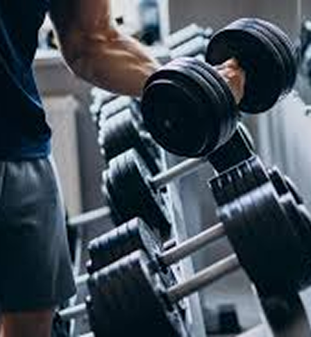
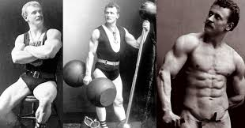

Prepare-se para descobrir como a prática da musculação pode impulsionar sua
qualidade de vida, desde o aumento da força e da resistência até a melhora do humor e do bem-estar
geral.
Sobre

Sobre mim!
Acreditamos que o conhecimento é fundamental para alcançar seus objetivos na musculação de
forma segura e eficaz. Por isso, nos esforçamos para fornecer quizzes precisos, informativos
e atualizados, que contribuam para o seu crescimento como praticante.
O gymquiz é um site criado com o intuito de incentivar a prática ao esporte, instigar a
curiosidade a respeito da musculação e compartilhar informações e curiosidades dessa
cultura.
Curiosidades

Eugen Sandow, considerado o pai da musculação moderna, revolucionou o
fisiculturismo no século XIX com seu físico escultural. Em 1901, organizou o primeiro
concurso da modalidade, o "Great Competition", vencido por Willian Murray. Sandow
desenvolveu técnicas de treino e equipamentos, transformando a musculação em uma prática
esportiva focada na estética corporal e saúde, legado que perdura até hoje.
Fonte: Cursos IPED
Fonte: Cursos IPED
Você sabia que a musculação é o segundo exercício mais praticado pelos brasileiros,
perdendo apenas para a caminhada? Segundo dados recentes, os brasileiros estão aderindo cada vez
mais aos treinos de força, seja por saúde, estética ou desempenho físico. Academias e
treinos funcionais são os grandes responsáveis por essa popularização.
Fonte: Edição do Brasil
Fonte: Edição do Brasil
O mercado fitness brasileiro movimenta bilhões de reais anualmente, sendo um dos mais
relevantes do mundo. Além dos ganhos econômicos, o setor contribui para a redução de custos
no sistema de saúde, já que a prática regular de exercícios diminui riscos de doenças
crônicas.
Fonte: FitMass
Fonte: FitMass
Site desenvolvido por Alexandre Soares de Oliveira
Aluno de Análise e Desenvolvimento de Sistemas na SPTech
Aluno de Análise e Desenvolvimento de Sistemas na SPTech